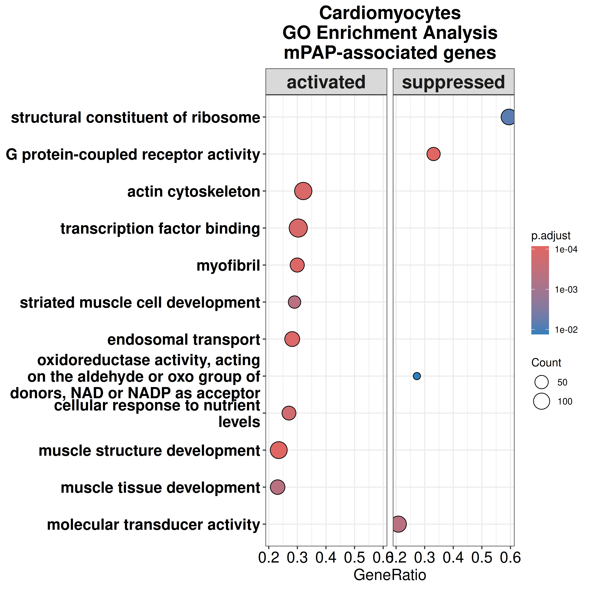
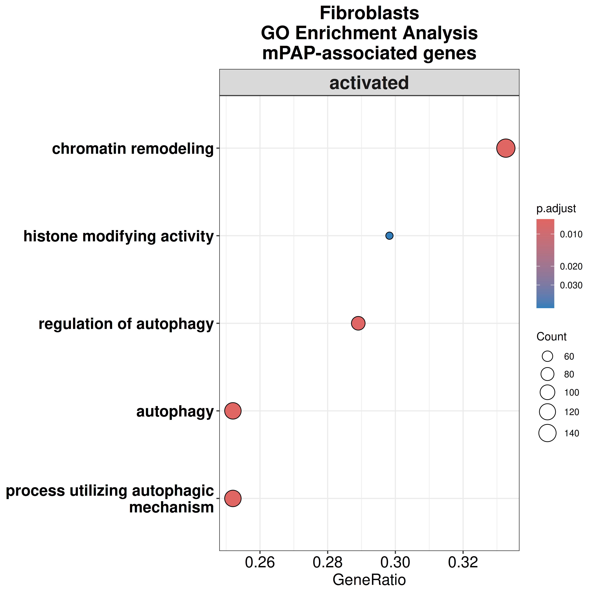
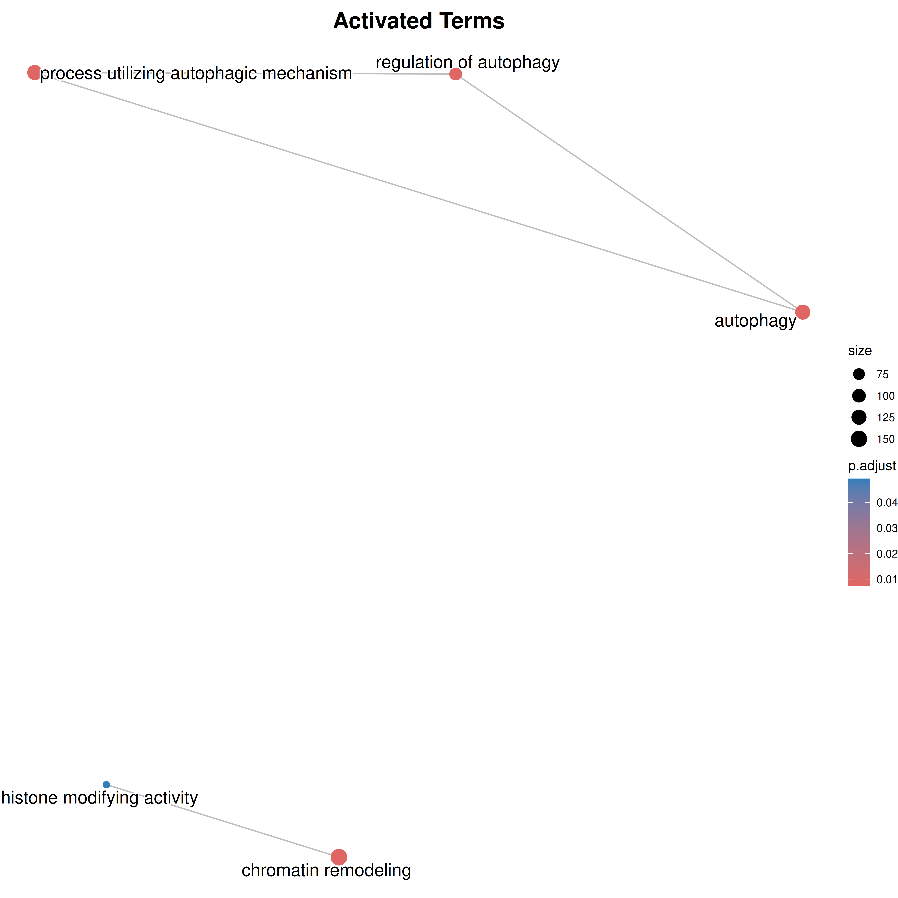

Differential expression analysis in all cell types using mPAP
GinoBonazza (ginoandrea.bonazza@usz.ch)
17 December, 2025
Last updated: 2025-12-17
Checks: 7 0
Knit directory: DCM_snRNAseq/
This reproducible R Markdown analysis was created with workflowr (version 1.7.2). The Checks tab describes the reproducibility checks that were applied when the results were created. The Past versions tab lists the development history.
Great! Since the R Markdown file has been committed to the Git repository, you know the exact version of the code that produced these results.
Great job! The global environment was empty. Objects defined in the global environment can affect the analysis in your R Markdown file in unknown ways. For reproduciblity it’s best to always run the code in an empty environment.
The command set.seed(20240606) was run prior to running
the code in the R Markdown file. Setting a seed ensures that any results
that rely on randomness, e.g. subsampling or permutations, are
reproducible.
Great job! Recording the operating system, R version, and package versions is critical for reproducibility.
Nice! There were no cached chunks for this analysis, so you can be confident that you successfully produced the results during this run.
Great job! Using relative paths to the files within your workflowr project makes it easier to run your code on other machines.
Great! You are using Git for version control. Tracking code development and connecting the code version to the results is critical for reproducibility.
The results in this page were generated with repository version be4eefb. See the Past versions tab to see a history of the changes made to the R Markdown and HTML files.
Note that you need to be careful to ensure that all relevant files for
the analysis have been committed to Git prior to generating the results
(you can use wflow_publish or
wflow_git_commit). workflowr only checks the R Markdown
file, but you know if there are other scripts or data files that it
depends on. Below is the status of the Git repository when the results
were generated:
Ignored files:
Ignored: .Rhistory
Ignored: .Rproj.user/
Ignored: output/CellChat/
Ignored: output/Cell_cell_communication_Macrophages/
Ignored: output/Chaffin_2022/
Ignored: output/Comparison_RV_bulk_RNAseq/
Ignored: output/Koenig_2022/
Ignored: output/SSc_PAH/
Ignored: output/Variance_partitioning/
Untracked files:
Untracked: .Rprofile
Untracked: Chaffin_wilcox.csv
Untracked: GRCh38-2020-A_build/
Untracked: Koenig_wilcox.csv
Untracked: Pseudobulk_all.csv
Untracked: Pseudobulk_byCellType_wilcox.csv
Untracked: analysis/Chaffin_2022.Rmd
Untracked: analysis/Check_IMC_panel.Rmd
Untracked: analysis/Comparison_RV_bulk_RNAseq.Rmd
Untracked: analysis/DE_Fibrosis_fibroblasts.Rmd
Untracked: analysis/DE_Group_all_cell_types.Rmd
Untracked: analysis/EC_capillary_angiogenic_boxplot_stats.csv
Untracked: analysis/Endothelial_cells_Koenig_Reichart.rmd
Untracked: analysis/Endothelial_cells_SGLT2_I.Rmd
Untracked: analysis/Fibroblasts_DA_DE_26.Rmd
Untracked: analysis/Genes_Luxembourg.Rmd
Untracked: analysis/HC_DEGs_clustering.Rmd
Untracked: analysis/HMEC.Rmd
Untracked: analysis/Koenig_2022.Rmd
Untracked: analysis/Lymphocytes_subclustering.Rmd
Untracked: analysis/Macrophages_subclustering.Rmd
Untracked: analysis/Mass_Spec_RV_dysf.Rmd
Untracked: analysis/Mural_cells_subclustering.Rmd
Untracked: analysis/Olink_RV_dysf.Rmd
Untracked: analysis/Olink_SSc_PAH.Rmd
Untracked: analysis/Olink_SSc_PAH_draft.Rmd
Untracked: analysis/Pseudobulk_all.csv
Untracked: analysis/Pseudobulk_byCellType_facetGrid.pdf
Untracked: analysis/Pseudobulk_byCellType_filtered_wrap3col.pdf
Untracked: analysis/Pseudobulk_byCellType_filtered_wrap3col_proportional.pdf
Untracked: analysis/Pseudobulk_byCellType_wilcox.csv
Untracked: analysis/Pseudobulk_byCellType_wilcox.filtered.csv
Untracked: analysis/Reichart_wilcox.csv
Untracked: analysis/Selection_genes_histology.Rmd
Untracked: analysis/TOM/
Untracked: analysis/UntitledR.R
Untracked: analysis/VennDiagram.2024-09-16_14-12-56.160498.log
Untracked: analysis/VennDiagram.2024-09-16_14-13-17.340014.log
Untracked: analysis/VennDiagram.2024-09-16_14-13-57.942673.log
Untracked: analysis/VennDiagram.2024-09-16_14-22-50.621507.log
Untracked: analysis/VennDiagram.2024-09-16_14-24-47.010131.log
Untracked: analysis/VennDiagram.2024-09-18_11-22-29.278827.log
Untracked: analysis/VennDiagram.2025-03-25_17-41-35.50458.log
Untracked: analysis/VennDiagram.2025-03-25_17-41-41.199096.log
Untracked: analysis/VennDiagram.2025-03-25_17-41-59.64245.log
Untracked: analysis/VennDiagram.2025-03-25_17-45-11.922474.log
Untracked: analysis/VennDiagram.2025-03-25_17-50-36.483812.log
Untracked: analysis/VennDiagram.2025-03-25_17-56-46.244322.log
Untracked: analysis/VennDiagram.2025-03-25_17-58-30.74362.log
Untracked: analysis/VennDiagram.2025-03-26_15-54-09.244636.log
Untracked: analysis/VennDiagram.2025-06-11_14-53-30.499963.log
Untracked: analysis/ec_Reichart_logCPM.csv
Untracked: analysis/omnipathr-log/
Untracked: code/Add_metadata.R
Untracked: code/Check DYSF.R
Untracked: code/Clustering_genes.R
Untracked: code/DE_5_percent.Rmd
Untracked: code/DE_5_percent.html
Untracked: code/DE_5_percent/
Untracked: code/DE_CM_test1.R
Untracked: code/DE_no_401.Rmd
Untracked: code/DE_no_401.html
Untracked: code/DE_no_401/
Untracked: code/Differential abundance test1.R
Untracked: code/Differential_Expression_edgeR_All.Rmd
Untracked: code/Differential_Expression_edgeR_All_2.Rmd
Untracked: code/Differential_Expression_edgeR_All_2.html
Untracked: code/Differential_Expression_edgeR_All_Age.Rmd
Untracked: code/Differential_Expression_edgeR_All_Age_2.Rmd
Untracked: code/Differential_Expression_edgeR_All_Age_2.html
Untracked: code/Differential_Expression_edgeR_All_groups.Rmd
Untracked: code/Differential_Expression_edgeR_All_groups.html
Untracked: code/Differential_Expression_edgeR_All_groups_2.Rmd
Untracked: code/Differential_Expression_edgeR_All_groups_2.html
Untracked: code/Differential_Expression_edgeR_All_groups_3.Rmd
Untracked: code/Differential_Expression_edgeR_All_groups_3.html
Untracked: code/PCA and CCA analysis test.R
Untracked: code/Pseudobulk DCM HC.R
Untracked: code/Published_heart_datasets_RV_vs_LV.Rmd
Untracked: code/QC_integration_annotation_orig.Rmd
Untracked: code/Removed_chunks.Rmd
Untracked: code/UpSet_plot_DEGs.Rmd
Untracked: code/Volcano_highlighted_genes.R
Untracked: code/ezInteractiveTable.Rmd
Untracked: code/ezInteractiveTable.html
Untracked: code/old.R
Untracked: data/Cellbender_output/
Untracked: data/Cellranger_output/
Untracked: data/DCM_Clinical_data.xlsx
Untracked: data/DCM_Clinical_data_26.xlsx
Untracked: data/DCM_Clinical_data_30.xlsx
Untracked: data/HMEC_RNAseq/
Untracked: data/Heart_specific_proteome.xlsx
Untracked: data/Homo_sapiens.GRCh38.93.gtf
Untracked: data/Human_plasma_proteome.xlsx
Untracked: data/Massons_quantification.xlsx
Untracked: data/Published_datasets/
Untracked: data/Raw/
Untracked: data/SSc-PAH/
Untracked: data/gencode.v46.chr_patch_hapl_scaff.annotation.gtf
Untracked: data/gencode.v46.chr_patch_hapl_scaff.basic.annotation.gtf
Untracked: data/refdata-gex-GRCh38-2020-A/
Untracked: omnipathr-log/
Untracked: output/Biomarkers_selection/
Untracked: output/CM_lncRNAs/
Untracked: output/Cardiomyocytes_DA_DE/
Untracked: output/Cardiomyocytes_subclustering/
Untracked: output/Cardiomyocytes_subclustering_26/
Untracked: output/Cell_cell_communication/
Untracked: output/Cell_cell_communication_LV/
Untracked: output/Cell_cell_communication_LV2/
Untracked: output/Cell_cycle/
Untracked: output/Check_IMC_panel/
Untracked: output/Comparison_LV/
Untracked: output/DA_DE_all_cell_types_and_parameters/
Untracked: output/DE_Fibrosis_all_cell_types/
Untracked: output/DE_Fibrosis_fibroblasts/
Untracked: output/DE_Group_all_cell_types/
Untracked: output/DE_all_cell_types_mPAP/
Untracked: output/DE_mPAP_all_cell_types/
Untracked: output/Differential_expression_edgeR_All/
Untracked: output/Differential_expression_edgeR_All_Age/
Untracked: output/Dysferlin/
Untracked: output/Endothelial_cells_Koenig_Reichart/
Untracked: output/Endothelial_cells_SGLT2_I/
Untracked: output/Endothelial_cells_published_datasets/
Untracked: output/Endothelial_cells_subclustering/
Untracked: output/Fibroblasts_DA_DE_26/
Untracked: output/Fibroblasts_subclustering/
Untracked: output/Figures_manuscript/
Untracked: output/Genes_Luxembourg/
Untracked: output/HC_DEGs_clustering/
Untracked: output/HMEC/
Untracked: output/LV_Klaudia/
Untracked: output/Lymphocytes_subclustering/
Untracked: output/Macrophages_subclustering/
Untracked: output/Mass_Spec_RV_dysf/
Untracked: output/Mural_cells_subclustering/
Untracked: output/Olink_RV_dysf/
Untracked: output/Olink_SSc_PAH/
Untracked: output/Olink_SSc_PAH_draft/
Untracked: output/QC_integration_annotation/
Untracked: output/Reichart_DE_DCMvsHC/
Untracked: output/Selection_genes_histology/
Untracked: output/UntitledR.R
Untracked: redsfewfref.R
Untracked: reference_sources/
Untracked: renv.lock
Untracked: renv/
Unstaged changes:
Modified: analysis/Biomarkers_selection.Rmd
Modified: analysis/CM_lncRNAs.Rmd
Modified: analysis/Cardiomyocytes_DA_DE.Rmd
Modified: analysis/Cell_cycle.Rmd
Modified: analysis/Comparison_LV.Rmd
Modified: analysis/DE_Fibrosis_all_cell_types.Rmd
Deleted: analysis/Differential_Expression_edgeR_All.Rmd
Deleted: analysis/Differential_Expression_edgeR_All_Age.Rmd
Modified: analysis/Dysferlin.Rmd
Modified: analysis/Endothelial_cells_published_datasets.rmd
Modified: analysis/Endothelial_cells_subclustering.Rmd
Modified: analysis/Fibroblasts_subclustering.Rmd
Modified: analysis/Figures_manuscript.Rmd
Modified: analysis/Genes_Luxembourg_2.Rmd
Modified: analysis/LV_Klaudia.Rmd
Modified: analysis/Reichart_DE_DCMvsHC.Rmd
Modified: analysis/SSc_PAH.Rmd
Note that any generated files, e.g. HTML, png, CSS, etc., are not included in this status report because it is ok for generated content to have uncommitted changes.
These are the previous versions of the repository in which changes were
made to the R Markdown
(analysis/DE_mPAP_all_cell_types.Rmd) and HTML
(docs/DE_mPAP_all_cell_types.html) files. If you’ve
configured a remote Git repository (see ?wflow_git_remote),
click on the hyperlinks in the table below to view the files as they
were in that past version.
| File | Version | Author | Date | Message |
|---|---|---|---|---|
| Rmd | be4eefb | GinoBonazza | 2025-12-17 | wflow_publish("analysis/DE_mPAP_all_cell_types.Rmd") |
| html | 64b753c | GinoBonazza | 2024-09-25 | Build site. |
| Rmd | 839c8cb | GinoBonazza | 2024-09-23 | wflow_publish("analysis/DE_mPAP_all_cell_types.Rmd") |
Setup
# Get current file name to make folder
current_file <- "DE_mPAP_all_cell_types"
# Load libraries
library(here)
library(dplyr)
library(ggplot2)
library(tibble)
library(readr)
library(readxl)
library(knitr)
library(patchwork)
library(scales)
library(clusterProfiler)
library(org.Hs.eg.db)
library(enrichplot)
library(Seurat)
library(DropletUtils)
library(Matrix)
library(scDblFinder)
library(scCustomize)
library(magrittr)
library(tidyverse)
library(reshape2)
library(S4Vectors)
library(SingleCellExperiment)
library(pheatmap)
library(png)
library(gridExtra)
library(Matrix.utils)
library(scater)
library(statmod)
library(clustree)
library(harmony)
library(gprofiler2)
library(AnnotationHub)
library(ReactomePA)
library(speckle)
library(limma)
library(reactable)
library(decoupleR)
library(OmnipathR)
library(dorothea)
library(edgeR)
library(rtracklayer)
library(EnhancedVolcano)
library(ComplexHeatmap)
library(cowplot)
#Output paths
output_dir_data <- here::here("output", current_file)
if (!dir.exists(output_dir_data)) dir.create(output_dir_data)
if (!dir.exists(here::here("docs", "figure"))) dir.create(here::here("docs", "figure"))
output_dir_figs <- here::here("docs", "figure", paste0(current_file, ".Rmd"))
if (!dir.exists(output_dir_figs)) dir.create(output_dir_figs)DE mPAP
Load seurat object
DCM_RV_integrated <- readRDS(here::here("output", "QC_integration_annotation", "DCM_RV.rds"))Load DE results
cluster_names <- c("Cardiomyocytes", "Fibroblasts", "Endothelial_cells", "Pericytes", "Macrophages", "T_lymphocytes", "Smooth_muscle_cells", "Neuronal_cells", "Endocardial_cells")results <- list()
for (i in seq_along(cluster_names)) {
results[[i]] <- read.csv(here::here("output", "DA_DE_all_cell_types_and_parameters", paste0(cluster_names[i], "_DE_Results_mPAP_mmHg.csv")))
names(results)[i] <- cluster_names[i]
}signif <- list()
for (i in seq_along(cluster_names)) {
signif[[i]] <- read.csv(here::here("output", "DA_DE_all_cell_types_and_parameters", paste0(cluster_names[i], "_DE_Significant_mPAP_mmHg.csv")))
names(signif)[i] <- cluster_names[i]
}Add info to the results data frame: coding/not coding and unique/overlapping
reference_genes <- readGFF(here::here("data", "refdata-gex-GRCh38-2020-A", "genes", "genes.gtf"))
reference_genes <- unique(dplyr::select(reference_genes, gene_id, gene_type, gene_name))for (i in seq_along(results)) {
results[[i]] <- left_join(results[[i]], reference_genes, by = c("gene" = "gene_name"))
}for (i in seq_along(results)) {
results[[i]]$up_down <- ifelse(
results[[i]]$logFC > 0.5 & results[[i]]$FDR < 0.05, "Increased",
ifelse(results[[i]]$logFC < -0.5 & results[[i]]$FDR < 0.05, "Decreased",
"Not significant"
)
)
}for (i in seq_along(results)) {
others_up <- unlist(lapply(signif[-i], function(df) df$gene[df$logFC > 0.5]))
others_down <- unlist(lapply(signif[-i], function(df) df$gene[df$logFC < -0.5]))
results[[i]]$unique_overlapping <- ifelse(
results[[i]]$up_down == "Increased" & results[[i]]$gene %in% others_up, "Overlapping",
ifelse(results[[i]]$up_down == "Decreased" & results[[i]]$gene %in% others_down, "Overlapping",
ifelse(results[[i]]$up_down == "Increased" & !results[[i]]$gene %in% others_up, "Unique",
ifelse(results[[i]]$up_down == "Decreased" & !results[[i]]$gene %in% others_down, "Unique",
"Not significant"
)
)
)
)
}Volcano plots
get_legend <- function(my_plot) {
tmp <- ggplotGrob(my_plot)
legend <- tmp$grobs[[which(sapply(tmp$grobs, function(x) x$name) == "guide-box")]]
return(legend)
}volcano <- list()
for (i in seq_along(results)) {
keyvals <- rep("grey", nrow(results[[i]]))
names(keyvals) <- rep("Not significant", nrow(results[[i]]))
keyvals[results[[i]]$up_down == "Increased"] <- "#A63A2A"
names(keyvals)[keyvals == "#A63A2A"] <- "Increased"
keyvals[results[[i]]$up_down == "Decreased"] <- "#004C8C"
names(keyvals)[keyvals == "#004C8C"] <- "Decreased"
volcano[[i]] <- EnhancedVolcano(results[[i]],
lab = results[[i]]$gene,
x = "logFC",
y = "FDR",
labSize = 0,
legendLabSize = 15,
titleLabSize = 16,
subtitleLabSize = 14,
axisLabSize = 12,
captionLabSize = 9,
pointSize = 1,
FCcutoff = 0.5,
pCutoff = 0.05,
ylim = c(0, 3.5),
colAlpha = 1,
drawConnectors = FALSE,
subtitle = NULL,
title = names(results)[i],
colCustom = keyvals
) + theme(legend.position = "none")
names(volcano)[i] <- names(results)[i]
}
# Extract the legend from the first plot
legend <- cowplot::get_legend(volcano[[1]] + theme(legend.position = "right"))
# Combine the individual volcano plots
combined_plot <- patchwork::wrap_plots(volcano, ncol = 5)
# Use ggdraw and draw_plot to overlay the legend in the bottom-right corner
final_plot <- cowplot::ggdraw() +
cowplot::draw_plot(combined_plot, 0, 0, 1, 1) + # Place the combined plot to fill the whole canvas
cowplot::draw_plot(legend, 0.77, 0.15, 0.25, 0.25) # Position the legend in the bottom-right
# Print the final plot
print(final_plot)
| Version | Author | Date |
|---|---|---|
| 64b753c | GinoBonazza | 2024-09-25 |
volcano <- list()
for (i in seq_along(results)) {
keyvals <- rep("grey", nrow(results[[i]]))
names(keyvals) <- rep("Not significant", nrow(results[[i]]))
keyvals[results[[i]]$up_down == "Increased" & results[[i]]$gene_type == "protein_coding"] <- "#A63A2A"
names(keyvals)[keyvals == "#A63A2A"] <- "Increased - protein coding"
keyvals[results[[i]]$up_down == "Decreased" & results[[i]]$gene_type == "protein_coding"] <- "#004C8C"
names(keyvals)[keyvals == "#004C8C"] <- "Decreased - protein coding"
keyvals[results[[i]]$up_down == "Increased" & results[[i]]$gene_type == "lncRNA"] <- "#228B22"
names(keyvals)[keyvals == "#228B22"] <- "Increased - non coding"
keyvals[results[[i]]$up_down == "Decreased" & results[[i]]$gene_type == "lncRNA"] <- "#FFCC00"
names(keyvals)[keyvals == "#FFCC00"] <- "Decreased - non coding"
volcano[[i]] <- EnhancedVolcano(results[[i]],
lab = results[[i]]$gene,
x = "logFC",
y = "FDR",
labSize = 0,
legendLabSize = 15,
titleLabSize = 16,
subtitleLabSize = 14,
axisLabSize = 12,
captionLabSize = 9,
pointSize = 1,
FCcutoff = 0.5,
pCutoff = 0.05,
ylim = c(0, 3.5),
colAlpha = 1,
drawConnectors = FALSE,
subtitle = NULL,
title = names(results)[i],
colCustom = keyvals
) + theme(legend.position = "none")
names(volcano)[i] <- names(results)[i]
}
# Extract the legend from the first plot
legend <- cowplot::get_legend(volcano[[1]] + theme(legend.position = "right"))
# Combine the individual volcano plots
combined_plot <- patchwork::wrap_plots(volcano, ncol = 5)
# Use ggdraw and draw_plot to overlay the legend in the bottom-right corner
final_plot <- cowplot::ggdraw() +
cowplot::draw_plot(combined_plot, 0, 0, 1, 1) + # Place the combined plot to fill the whole canvas
cowplot::draw_plot(legend, 0.77, 0.15, 0.25, 0.25) # Position the legend in the bottom-right
# Print the final plot
print(final_plot)
| Version | Author | Date |
|---|---|---|
| 64b753c | GinoBonazza | 2024-09-25 |
volcano <- list()
for (i in seq_along(results)) {
keyvals <- rep("grey", nrow(results[[i]]))
names(keyvals) <- rep("Not significant", nrow(results[[i]]))
keyvals[results[[i]]$up_down == "Increased" & results[[i]]$unique_overlapping == "Unique"] <- "#A63A2A"
names(keyvals)[keyvals == "#A63A2A"] <- "Increased - Unique"
keyvals[results[[i]]$up_down == "Decreased" & results[[i]]$unique_overlapping == "Unique"] <- "#004C8C"
names(keyvals)[keyvals == "#004C8C"] <- "Decreased - Unique"
keyvals[results[[i]]$up_down == "Increased" & results[[i]]$unique_overlapping == "Overlapping"] <- "#D6A0A0"
names(keyvals)[keyvals == "#D6A0A0"] <- "Increased - Overlapping"
keyvals[results[[i]]$up_down == "Decreased" & results[[i]]$unique_overlapping == "Overlapping"] <- "#A0C4FF"
names(keyvals)[keyvals == "#A0C4FF"] <- "Decreased - Overlapping"
volcano[[i]] <- EnhancedVolcano(results[[i]],
lab = results[[i]]$gene,
x = "logFC",
y = "FDR",
labSize = 0,
legendLabSize = 15,
titleLabSize = 16,
subtitleLabSize = 14,
axisLabSize = 12,
captionLabSize = 9,
pointSize = 1,
FCcutoff = 0.5,
pCutoff = 0.05,
ylim = c(0, 3.5),
colAlpha = 1,
drawConnectors = FALSE,
subtitle = NULL,
title = names(results)[i],
colCustom = keyvals
) + theme(legend.position = "none")
names(volcano)[i] <- names(results)[i]
}
# Extract the legend from the first plot
legend <- cowplot::get_legend(volcano[[1]] + theme(legend.position = "right"))
# Combine the individual volcano plots
combined_plot <- patchwork::wrap_plots(volcano, ncol = 5)
# Use ggdraw and draw_plot to overlay the legend in the bottom-right corner
final_plot <- cowplot::ggdraw() +
cowplot::draw_plot(combined_plot, 0, 0, 1, 1) + # Place the combined plot to fill the whole canvas
cowplot::draw_plot(legend, 0.77, 0.15, 0.25, 0.25) # Position the legend in the bottom-right
# Print the final plot
print(final_plot)
| Version | Author | Date |
|---|---|---|
| 64b753c | GinoBonazza | 2024-09-25 |
volcano <- list()
results_no_lnc <- results
for (i in seq_along(results)) {
results_no_lnc[[i]] <- dplyr::filter(results_no_lnc[[i]], gene_type == "protein_coding")
keyvals <- rep("grey", nrow(results_no_lnc[[i]]))
names(keyvals) <- rep("Not significant", nrow(results_no_lnc[[i]]))
keyvals[results_no_lnc[[i]]$up_down == "Increased" & results_no_lnc[[i]]$gene_type == "protein_coding"] <- "#A63A2A"
names(keyvals)[keyvals == "#A63A2A"] <- "Increased - protein coding"
keyvals[results_no_lnc[[i]]$up_down == "Decreased" & results_no_lnc[[i]]$gene_type == "protein_coding"] <- "#004C8C"
names(keyvals)[keyvals == "#004C8C"] <- "Decreased - protein coding"
volcano[[i]] <- EnhancedVolcano(results_no_lnc[[i]],
lab = results_no_lnc[[i]]$gene,
x = "logFC",
y = "FDR",
labSize = 0,
legendLabSize = 15,
titleLabSize = 16,
subtitleLabSize = 14,
axisLabSize = 12,
captionLabSize = 9,
pointSize = 1,
FCcutoff = 0.5,
pCutoff = 0.05,
ylim = c(0, 3.5),
colAlpha = 1,
drawConnectors = FALSE,
subtitle = NULL,
title = names(results_no_lnc)[i],
colCustom = keyvals
) + theme(legend.position = "none")
names(volcano)[i] <- names(results_no_lnc)[i]
}
# Extract the legend from the first plot
legend <- cowplot::get_legend(volcano[[1]] + theme(legend.position = "right"))
# Combine the individual volcano plots
combined_plot <- patchwork::wrap_plots(volcano, ncol = 5)
# Use ggdraw and draw_plot to overlay the legend in the bottom-right corner
final_plot <- cowplot::ggdraw() +
cowplot::draw_plot(combined_plot, 0, 0, 1, 1) + # Place the combined plot to fill the whole canvas
cowplot::draw_plot(legend, 0.77, 0.15, 0.25, 0.25) # Position the legend in the bottom-right
# Print the final plot
print(final_plot)
| Version | Author | Date |
|---|---|---|
| 64b753c | GinoBonazza | 2024-09-25 |
volcano <- list()
results_no_overlap <- results
for (i in seq_along(results)) {
results_no_overlap[[i]] <- dplyr::filter(results_no_overlap[[i]], unique_overlapping %in% c("Unique", "Not significant"))
keyvals <- rep("grey", nrow(results_no_overlap[[i]]))
names(keyvals) <- rep("Not significant", nrow(results_no_overlap[[i]]))
keyvals[results_no_overlap[[i]]$up_down == "Increased" & results_no_overlap[[i]]$unique_overlapping == "Unique"] <- "#A63A2A"
names(keyvals)[keyvals == "#A63A2A"] <- "Increased - Unique"
keyvals[results_no_overlap[[i]]$up_down == "Decreased" & results_no_overlap[[i]]$unique_overlapping == "Unique"] <- "#004C8C"
names(keyvals)[keyvals == "#004C8C"] <- "Decreased - Unique"
volcano[[i]] <- EnhancedVolcano(results_no_overlap[[i]],
lab = results_no_overlap[[i]]$gene,
x = "logFC",
y = "FDR",
labSize = 0,
legendLabSize = 15,
titleLabSize = 16,
subtitleLabSize = 14,
axisLabSize = 12,
captionLabSize = 9,
pointSize = 1,
FCcutoff = 0.5,
pCutoff = 0.05,
ylim = c(0, 3.5),
colAlpha = 1,
drawConnectors = FALSE,
subtitle = NULL,
title = names(results_no_overlap)[i],
colCustom = keyvals
) + theme(legend.position = "none")
names(volcano)[i] <- names(results_no_overlap)[i]
}
# Extract the legend from the first plot
legend <- cowplot::get_legend(volcano[[1]] + theme(legend.position = "right"))
# Combine the individual volcano plots
combined_plot <- patchwork::wrap_plots(volcano, ncol = 5)
# Use ggdraw and draw_plot to overlay the legend in the bottom-right corner
final_plot <- cowplot::ggdraw() +
cowplot::draw_plot(combined_plot, 0, 0, 1, 1) + # Place the combined plot to fill the whole canvas
cowplot::draw_plot(legend, 0.77, 0.15, 0.25, 0.25) # Position the legend in the bottom-right
# Print the final plot
print(final_plot)
| Version | Author | Date |
|---|---|---|
| 64b753c | GinoBonazza | 2024-09-25 |
Bar plots
signif <- results
for (i in seq_along(results)) {
signif[[i]] <- results[[i]] %>%
dplyr::filter(FDR < 0.05) %>%
dplyr::filter(abs(logFC) > 0.5)
}n_de_genes <- data.frame()
for (i in seq_along(signif)) {
cell_type <- c(rep(names(signif)[i], 2))
effect <- c("Increased", "Decreased")
n <- c(nrow(dplyr::filter(signif[[i]], logFC > 0)), nrow(dplyr::filter(signif[[i]], logFC < 0)))
de_tot <- nrow(signif[[i]])
n_de_genes <- rbind(n_de_genes, data.frame(cell_type,effect,n, de_tot))
}
n_de_genes <- n_de_genes %>%
arrange(desc(de_tot))
n_de_genes$cell_type <- factor(n_de_genes$cell_type, levels = unique(n_de_genes$cell_type))
# Plot with customizations
ggplot(n_de_genes, aes(fill=effect, y=n, x=cell_type)) +
geom_bar(position="stack", stat="identity") +
scale_fill_manual(values = c("Increased" = "#A63A2A", "Decreased" = "#004C8C")) +
theme(text = element_text(size = 15), axis.text.x = element_text(angle = 45, hjust = 1)) +
labs(x = "Cell Type", y = "Number of Genes", fill = "Effect") +
guides(fill = guide_legend(title = NULL))
| Version | Author | Date |
|---|---|---|
| 64b753c | GinoBonazza | 2024-09-25 |
n_de_genes <- data.frame()
for (i in seq_along(signif)) {
cell_type <- c(rep(names(signif)[i], 2))
effect <- c("Increased", "Decreased")
n <- c(nrow(dplyr::filter(signif[[i]], logFC > 0)), nrow(dplyr::filter(signif[[i]], logFC < 0)))
de_tot <- nrow(signif[[i]])
n_de_genes <- rbind(n_de_genes, data.frame(cell_type,effect,n, de_tot))
}
n_de_genes <- n_de_genes %>%
arrange(desc(de_tot))
n_de_genes$cell_type <- factor(n_de_genes$cell_type, levels = unique(n_de_genes$cell_type))
n_de_genes$cell_type <- gsub("_", " ", n_de_genes$cell_type)
n_de_genes$cell_type <- factor(n_de_genes$cell_type, levels = unique(n_de_genes$cell_type))
ggplot(n_de_genes, aes(fill = effect, y = n, x = cell_type)) +
geom_bar(position = "stack", stat = "identity") +
scale_fill_manual(values = c("Increased" = "#A63A2A", "Decreased" = "#004C8C")) +
theme_bw() +
theme(
panel.grid.major = element_blank(),
panel.grid.minor = element_blank(),
panel.background = element_blank(),
axis.text.x = element_text(angle = 30, hjust = 1, color = "black", size = 17),
axis.text.y = element_text(color = "black", size = 17),
axis.title.x = element_text(size = 20),
axis.title.y = element_text(size = 20),
text = element_text(size = 20),
legend.text = element_text(size = 20),
legend.title = element_blank(),
legend.position = c(0.96, 0.9), # Top-right inside the plot
legend.justification = c("right", "top"), # Anchor to top-right
legend.background = element_rect(fill = "white", color = "black") # Optional: box around legend
) +
labs(x = "Cell Type", y = "Number of Genes", fill = "Effect")
n_de_genes <- data.frame()
for (i in seq_along(signif)) {
cell_type <- names(signif)[i]
effect <- c("Increased - protein coding", "Increased - non coding", "Decreased - protein coding", "Decreased - non coding")
n <- c(nrow(dplyr::filter(signif[[i]], logFC > 0 & gene_type == "protein_coding")),
nrow(dplyr::filter(signif[[i]], logFC > 0 & gene_type == "lncRNA")),
nrow(dplyr::filter(signif[[i]], logFC < 0 & gene_type == "protein_coding")),
nrow(dplyr::filter(signif[[i]], logFC < 0 & gene_type == "lncRNA"))
)
de_tot <- nrow(signif[[i]])
n_de_genes <- rbind(n_de_genes, data.frame(cell_type,effect,n, de_tot))
}
n_de_genes$cell_type <- factor(n_de_genes$cell_type, levels = unique(n_de_genes$cell_type))
ggplot(n_de_genes, aes(fill=effect, y=n, x=cell_type)) +
geom_bar(position="stack", stat="identity") +
scale_fill_manual(values = c("Increased - protein coding" = "#A63A2A",
"Decreased - protein coding" = "#004C8C",
"Increased - non coding" = "#D6A0A0",
"Decreased - non coding" = "#A0C4FF")) +
theme(text = element_text(size = 15), axis.text.x = element_text(angle = 45, hjust = 1)) +
labs(x = "Cell Type", y = "Number of Genes", fill = "Effect") +
guides(fill = guide_legend(title = NULL))
| Version | Author | Date |
|---|---|---|
| 64b753c | GinoBonazza | 2024-09-25 |
n_de_genes_nc <- data.frame()
for (i in seq_along(signif)) {
cell_type <- names(signif)[i]
effect <- c("Increased - protein coding", "Increased - non coding", "Decreased - protein coding", "Decreased - non coding")
n <- c(nrow(dplyr::filter(signif[[i]], logFC > 0 & gene_type == "protein_coding")),
nrow(dplyr::filter(signif[[i]], logFC > 0 & gene_type == "lncRNA")),
nrow(dplyr::filter(signif[[i]], logFC < 0 & gene_type == "protein_coding")),
nrow(dplyr::filter(signif[[i]], logFC < 0 & gene_type == "lncRNA"))
)
de_tot <- nrow(signif[[i]])
n_de_genes_nc <- rbind(n_de_genes_nc, data.frame(cell_type,effect,n, de_tot))
}
# Clean up cell type names
n_de_genes_nc$cell_type <- gsub("_", " ", n_de_genes_nc$cell_type)
n_de_genes_nc$cell_type <- factor(n_de_genes_nc$cell_type, levels = c("Cardiomyocytes",
"Fibroblasts",
"Endothelial cells",
"Pericytes",
"Macrophages",
"Smooth muscle cells",
"T lymphocytes",
"Neuronal cells",
"Endocardial cells"
))
# Plot
ggplot(n_de_genes_nc, aes(fill = effect, y = n, x = cell_type)) +
geom_bar(position = "stack", stat = "identity") +
scale_fill_manual(values = c("Increased - protein coding" = "#E76F51",
"Decreased - protein coding" = "#264653",
"Increased - non coding" = "#F4A261",
"Decreased - non coding" = "#2A9D8F"
)) +
theme_bw() +
theme(
panel.grid.major = element_blank(),
panel.grid.minor = element_blank(),
panel.background = element_blank(),
axis.text.x = element_text(angle = 30, hjust = 1, color = "black", size = 17),
axis.text.y = element_text(color = "black", size = 17),
axis.title.x = element_text(size = 20),
axis.title.y = element_text(size = 20),
text = element_text(size = 20),
legend.text = element_text(size = 20),
legend.title = element_blank(),
legend.position = c(0.96, 0.9),
legend.justification = c("right", "top"),
legend.background = element_rect(fill = "white", color = "black")
) +
labs(x = "Cell Type", y = "Number of Genes", fill = "Effect")
n_de_genes_u<- data.frame()
for (i in seq_along(signif)) {
cell_type <- names(signif)[i]
effect <- c("Increased - Unique", "Increased - Overlapping", "Decreased - Unique", "Decreased - Overlapping")
n <- c(nrow(dplyr::filter(signif[[i]], logFC > 0 & unique_overlapping == "Unique")),
nrow(dplyr::filter(signif[[i]], logFC > 0 & unique_overlapping == "Overlapping")),
nrow(dplyr::filter(signif[[i]], logFC < 0 & unique_overlapping == "Unique")),
nrow(dplyr::filter(signif[[i]], logFC < 0 & unique_overlapping == "Overlapping"))
)
de_tot <- nrow(signif[[i]])
n_de_genes_u <- rbind(n_de_genes_u, data.frame(cell_type,effect,n, de_tot))
}
# Clean up cell type names
n_de_genes_u$cell_type <- gsub("_", " ", n_de_genes_u$cell_type)
n_de_genes_u$cell_type <- factor(n_de_genes_u$cell_type, levels = c("Cardiomyocytes",
"Fibroblasts",
"Endothelial cells",
"Pericytes",
"Smooth muscle cells",
"Macrophages",
"Neuronal cells",
"Lymphocytes",
"Endocardial cells"
))
# Set output file path
output_file <- file.path(output_dir_data, "Barplot_protein_overlapping_poster.png")
# Save plot to PNG
png(output_file, width = 8.8, height = 4.5, units = "in", res = 300)
# Plot
ggplot(n_de_genes_u, aes(fill = effect, y = n, x = cell_type)) +
geom_bar(position = "stack", stat = "identity") +
scale_fill_manual(values = c("Increased - Unique" = "#A63A2A",
"Decreased - Unique" = "#004C8C",
"Increased - Overlapping" = "#D6A0A0",
"Decreased - Overlapping" = "#A0C4FF"
)) +
theme_bw() +
theme(
panel.grid.major = element_blank(),
panel.grid.minor = element_blank(),
panel.background = element_blank(),
axis.text.x = element_text(angle = 30, hjust = 1, color = "black", size = 17),
axis.text.y = element_text(color = "black", size = 17),
axis.title.x = element_text(size = 20),
axis.title.y = element_text(size = 20),
text = element_text(size = 20),
legend.text = element_text(size = 20),
legend.title = element_blank(),
legend.position = c(0.96, 0.9),
legend.justification = c("right", "top"),
legend.background = element_rect(fill = "white", color = "black")
) +
labs(x = "Cell Type", y = "Number of Genes", fill = "Effect")
dev.off()png
2 n_de_genes<- data.frame()
for (i in seq_along(signif)) {
cell_type <- names(signif)[i]
effect <- c("Increased - Unique", "Increased - Overlapping", "Decreased - Unique", "Decreased - Overlapping")
n <- c(nrow(dplyr::filter(signif[[i]], logFC > 0 & unique_overlapping == "Unique")),
nrow(dplyr::filter(signif[[i]], logFC > 0 & unique_overlapping == "Overlapping")),
nrow(dplyr::filter(signif[[i]], logFC < 0 & unique_overlapping == "Unique")),
nrow(dplyr::filter(signif[[i]], logFC < 0 & unique_overlapping == "Overlapping"))
)
de_tot <- nrow(signif[[i]])
n_de_genes <- rbind(n_de_genes, data.frame(cell_type,effect,n, de_tot))
}
n_de_genes$cell_type <- factor(n_de_genes$cell_type, levels = unique(n_de_genes$cell_type))
ggplot(n_de_genes, aes(fill=effect, y=n, x=cell_type)) +
geom_bar(position="stack", stat="identity") +
scale_fill_manual(values = c("Increased - Unique" = "#E76F51",
"Decreased - Unique" = "#264653",
"Increased - Overlapping" = "#F4A261",
"Decreased - Overlapping" = "#2A9D8F")) +
theme(text = element_text(size = 15), axis.text.x = element_text(angle = 45, hjust = 1)) +
labs(x = "Cell Type", y = "Number of Genes", fill = "Effect") +
guides(fill = guide_legend(title = NULL))
| Version | Author | Date |
|---|---|---|
| 64b753c | GinoBonazza | 2024-09-25 |
n_de_genes<- data.frame()
for (i in seq_along(signif)) {
cell_type <- names(signif)[i]
effect <- c("Unique", "Overlapping")
n <- c(nrow(dplyr::filter(signif[[i]], unique_overlapping == "Unique")),
nrow(dplyr::filter(signif[[i]], unique_overlapping == "Overlapping"))
)
de_tot <- nrow(signif[[i]])
n_de_genes <- rbind(n_de_genes, data.frame(cell_type,effect,n, de_tot))
}
n_de_genes$cell_type <- factor(n_de_genes$cell_type, levels = unique(n_de_genes$cell_type))
ggplot(n_de_genes, aes(fill=effect, y=n, x=cell_type)) +
geom_bar(position="stack", stat="identity") +
scale_fill_manual(values = c("Unique" = "#A63A2A",
"Overlapping" = "#004C8C")) +
theme(text = element_text(size = 15), axis.text.x = element_text(angle = 45, hjust = 1)) +
labs(x = "Cell Type", y = "Number of Genes", fill = "Effect") +
guides(fill = guide_legend(title = NULL))
| Version | Author | Date |
|---|---|---|
| 64b753c | GinoBonazza | 2024-09-25 |
UpSet plots
signif_up <- signif
for (i in seq_along(signif_up)) {
signif_up[[i]] <- filter(signif_up[[i]], logFC > 0)
}
signif_down <- signif
for (i in seq_along(signif_down)) {
signif_down[[i]] <- filter(signif_down[[i]], logFC < 0)
}gene_sets <- list()
for (i in seq_along(signif_up)) {
gene_sets[[i]] <- signif_up[[i]]$gene
names(gene_sets)[i] <- names(signif_up)[i]
}
m <- make_comb_mat(gene_sets, mode = "distinct", min_set_size = 10)
#m <- m[comb_degree(m) >= 2]
m <- m[comb_size(m) >= 10]
p1 <- UpSet(m, column_title = "DE mPAP_mmHg - Upregulated", comb_order = order(comb_size(m)),
top_annotation = upset_top_annotation(m, add_numbers = TRUE),
right_annotation = upset_right_annotation(m, add_numbers = TRUE))
gene_sets <- list()
for (i in seq_along(signif_down)) {
gene_sets[[i]] <- signif_down[[i]]$gene
names(gene_sets)[i] <- names(signif_down)[i]
}
m <- make_comb_mat(gene_sets, mode = "distinct", min_set_size = 10)
#m <- m[comb_degree(m) >= 2]
m <- m[comb_size(m) >= 10]
p2 <- UpSet(m, column_title = "DE mPAP_mmHg - Downregulated", comb_order = order(comb_size(m)),
top_annotation = upset_top_annotation(m, add_numbers = TRUE),
right_annotation = upset_right_annotation(m, add_numbers = TRUE))
p1 <- grid::grid.grabExpr(draw(p1))
p2 <- grid::grid.grabExpr(draw(p2))
combined_plots <- plot_grid(p1, p2, ncol = 1)
print(combined_plots)
| Version | Author | Date |
|---|---|---|
| 64b753c | GinoBonazza | 2024-09-25 |
rm(gene_sets, m, p1, p2, combined_plots)GSEA
reorder_GO_by_pvalue <- function(enrichGO_result) {
go_results <- enrichGO_result@result
go_results_sorted <- go_results[order(go_results$p.adjust), ]
enrichGO_result@result <- go_results_sorted
return(enrichGO_result)
}classify_terms <- function(df) {
df$sign <- ifelse(df$NES > 0, "activated", "suppressed")
return(df)
}cluster_names_2 <- c("Cardiomyocytes", "Fibroblasts", "Endothelial cells", "Pericytes", "Macrophages", "T lymphocytes", "Smooth muscle cells", "Neuronal cells", "Endocardial cells")ranked_genes <- list()
GSEA_all <- list()
for (i in seq_along(cluster_names)) {
gene_counts <- rowSums(subset(DCM_RV_integrated, cell_type == cluster_names_2[i])@assays$RNA@counts > 0)
universe_genes <- names(gene_counts[gene_counts >= 3])
write.csv(as.data.frame(universe_genes), here::here(output_dir_data, paste0(cluster_names[i], "_universe_genes.csv")), quote=F, row.names = F)
universe_entrez <- bitr(universe_genes, fromType = "SYMBOL", toType = "ENTREZID", OrgDb = org.Hs.eg.db)$ENTREZID
write.csv(as.data.frame(universe_entrez), here::here(output_dir_data, paste0(cluster_names[i], "_universe_entrez.csv")), quote=F, row.names = F)
rm(gene_counts)
up_genes <- filter(signif[[i]], logFC > 0.5)$gene
up_genes <- bitr(up_genes, fromType="SYMBOL", toType="ENTREZID", OrgDb="org.Hs.eg.db")$ENTREZID
down_genes <- filter(signif[[i]], logFC < -0.5)$gene
down_genes <- bitr(down_genes, fromType="SYMBOL", toType="ENTREZID", OrgDb="org.Hs.eg.db")$ENTREZID
ranked_genes[[i]] <- results[[i]]
names(ranked_genes)[i] <- cluster_names[i]
ranked_genes[[i]]$metric <- ranked_genes[[i]]$logFC*-log10(ranked_genes[[i]]$PValue)
entrezid <- bitr(ranked_genes[[i]]$gene, fromType="SYMBOL", toType="ENTREZID", OrgDb="org.Hs.eg.db", drop = TRUE)
ranked_genes[[i]] <- merge(ranked_genes[[i]], entrezid, by.x = "gene", by.y = "SYMBOL")
ranked_genes[[i]] <- ranked_genes[[i]][!duplicated(ranked_genes[[i]]$metric), ]
write.csv(ranked_genes[[i]], file = here::here(output_dir_data, paste0(cluster_names[i], "_ranked_genes.csv")), quote=F, row.names = F)
genelist <- ranked_genes[[i]]$metric
names(genelist) <- ranked_genes[[i]]$ENTREZID
genelist <- genelist[order(genelist, decreasing = T)]
GSEA_all[i] <- gseGO(geneList = genelist,
OrgDb = org.Hs.eg.db,
ont = "ALL",
keyType = "ENTREZID",
nPermSimple = 1000000,
minGSSize = 10,
eps = 0)
GSEA_all[[i]] <- reorder_GO_by_pvalue(GSEA_all[[i]])
names(GSEA_all)[i] <- cluster_names[i]
saveRDS(GSEA_all[i], here::here(output_dir_data, paste0(cluster_names[i], "_GSEA_GO_mPAP.rds")))
}
rm(universe_genes, universe_entrez, up_genes, down_genes, genelist)
saveRDS(ranked_genes, here::here(output_dir_data, "ranked_genes_list.rds"))
saveRDS(GSEA_all, here::here(output_dir_data, "GSEA_all_list.rds"))GSEA_all <- readRDS(here::here(output_dir_data, "GSEA_all_list.rds"))GSEA_simplified <- clusterProfiler::simplify(
GSEA_all[["Cardiomyocytes"]],
cutoff = 0.75,
by = "p.adjust",
select_fun = min,
measure = "Wang",
semData = NULL
)
GSEA_simplified <- reorder_GO_by_pvalue(GSEA_simplified)
dotplot(GSEA_simplified, showCategory = 8, split=".sign", title = paste0("Cardiomyocytes", "\nGO Enrichment Analysis", "\nmPAP-associated genes"),
label_format = 35, font.size = 15) +
theme(plot.title = element_text( face = "bold", size = 18, hjust = 0.5),
axis.text.y = element_text(face = "bold"),
strip.text = element_text(face = "bold", size = 18)) +
facet_grid(.~.sign)
| Version | Author | Date |
|---|---|---|
| 64b753c | GinoBonazza | 2024-09-25 |
GSEA_simplified@result <- classify_terms(GSEA_simplified@result)
activated_terms <- subset(GSEA_simplified@result, sign == "activated")
suppressed_terms <- subset(GSEA_simplified@result, sign == "suppressed")
GSEA_activated <- GSEA_simplified
GSEA_activated@result <- activated_terms
GSEA_activated <- pairwise_termsim(GSEA_activated)
GSEA_suppressed <- GSEA_simplified
GSEA_suppressed@result <- suppressed_terms
GSEA_suppressed <- pairwise_termsim(GSEA_suppressed)
p1 <- emapplot(GSEA_activated, showCategory = 100, size_category = 0.7, min_edge = 0.15) +
ggtitle("Activated Terms") +
theme(plot.title = element_text(face = "bold", size = 18, hjust = 0.5))
p2 <- emapplot(GSEA_suppressed, showCategory = 100, size_category = 0.7, min_edge = 0.15) +
ggtitle("Suppressed Terms") +
theme(plot.title = element_text(face = "bold", size = 18, hjust = 0.5))
combined_plot <- p1 | p2
print(combined_plot)
| Version | Author | Date |
|---|---|---|
| 64b753c | GinoBonazza | 2024-09-25 |
rm(GSEA_simplified, activated_terms, suppressed_terms, GSEA_activated, GSEA_suppressed, p1, p2)GSEA_simplified <- clusterProfiler::simplify(
GSEA_all[["Fibroblasts"]],
cutoff = 0.75,
by = "p.adjust",
select_fun = min,
measure = "Wang",
semData = NULL
)
GSEA_simplified <- reorder_GO_by_pvalue(GSEA_simplified)
dotplot(GSEA_simplified, showCategory = 8, split=".sign", title = paste0("Fibroblasts", "\nGO Enrichment Analysis", "\nmPAP-associated genes"),
label_format = 30, font.size = 15) +
theme(plot.title = element_text( face = "bold", size = 18, hjust = 0.5),
axis.text.y = element_text(face = "bold"),
strip.text = element_text(face = "bold", size = 18)) +
facet_grid(.~.sign)
| Version | Author | Date |
|---|---|---|
| 64b753c | GinoBonazza | 2024-09-25 |
GSEA_simplified@result <- classify_terms(GSEA_simplified@result)
activated_terms <- subset(GSEA_simplified@result, sign == "activated")
suppressed_terms <- subset(GSEA_simplified@result, sign == "suppressed")
GSEA_activated <- GSEA_simplified
GSEA_activated@result <- activated_terms
GSEA_activated <- pairwise_termsim(GSEA_activated)
GSEA_suppressed <- GSEA_simplified
GSEA_suppressed@result <- suppressed_terms
p1 <- emapplot(GSEA_activated, showCategory = 100, size_category = 0.7, min_edge = 0.15) +
ggtitle("Activated Terms") +
theme(plot.title = element_text(face = "bold", size = 18, hjust = 0.5))
combined_plot <- p1
print(combined_plot)
rm(GSEA_simplified, activated_terms, suppressed_terms, GSEA_activated, GSEA_suppressed, p1, p2)GSEA_simplified <- clusterProfiler::simplify(
GSEA_all[["Endothelial_cells"]],
cutoff = 0.75,
by = "p.adjust",
select_fun = min,
measure = "Wang",
semData = NULL
)
GSEA_simplified <- reorder_GO_by_pvalue(GSEA_simplified)
dotplot(GSEA_simplified, showCategory = 8, split=".sign", title = paste0("Endothelial cells", "\nGO Enrichment Analysis", "\nmPAP-associated genes"),
label_format = 40, font.size = 15) +
theme(plot.title = element_text( face = "bold", size = 18, hjust = 0.5),
axis.text.y = element_text(face = "bold"),
strip.text = element_text(face = "bold", size = 18)) +
facet_grid(.~.sign)
| Version | Author | Date |
|---|---|---|
| 64b753c | GinoBonazza | 2024-09-25 |
GSEA_simplified@result <- classify_terms(GSEA_simplified@result)
activated_terms <- subset(GSEA_simplified@result, sign == "activated")
suppressed_terms <- subset(GSEA_simplified@result, sign == "suppressed")
GSEA_activated <- GSEA_simplified
GSEA_activated@result <- activated_terms
GSEA_activated <- pairwise_termsim(GSEA_activated)
GSEA_suppressed <- GSEA_simplified
GSEA_suppressed@result <- suppressed_terms
GSEA_suppressed <- pairwise_termsim(GSEA_suppressed)
p1 <- emapplot(GSEA_activated, showCategory = 100, size_category = 0.7, min_edge = 0.15) +
ggtitle("Activated Terms") +
theme(plot.title = element_text(face = "bold", size = 18, hjust = 0.5))
p2 <- emapplot(GSEA_suppressed, showCategory = 100, size_category = 0.7, min_edge = 0.15) +
ggtitle("Suppressed Terms") +
theme(plot.title = element_text(face = "bold", size = 18, hjust = 0.5))
combined_plot <- p1 | p2
print(combined_plot)
| Version | Author | Date |
|---|---|---|
| 64b753c | GinoBonazza | 2024-09-25 |
rm(GSEA_simplified, activated_terms, suppressed_terms, GSEA_activated, GSEA_suppressed, p1, p2)GSEA_simplified <- clusterProfiler::simplify(
GSEA_all[["Pericytes"]],
cutoff = 0.75,
by = "p.adjust",
select_fun = min,
measure = "Wang",
semData = NULL
)
GSEA_simplified <- reorder_GO_by_pvalue(GSEA_simplified)
dotplot(GSEA_simplified, showCategory = 8, split=".sign", title = paste0("Pericytes", "\nGO Enrichment Analysis", "\nmPAP-associated genes"),
label_format = 30, font.size = 15) +
theme(plot.title = element_text( face = "bold", size = 18, hjust = 0.5),
axis.text.y = element_text(face = "bold"),
strip.text = element_text(face = "bold", size = 18)) +
facet_grid(.~.sign)
| Version | Author | Date |
|---|---|---|
| 64b753c | GinoBonazza | 2024-09-25 |
GSEA_simplified@result <- classify_terms(GSEA_simplified@result)
activated_terms <- subset(GSEA_simplified@result, sign == "activated")
suppressed_terms <- subset(GSEA_simplified@result, sign == "suppressed")
GSEA_activated <- GSEA_simplified
GSEA_activated@result <- activated_terms
GSEA_activated <- pairwise_termsim(GSEA_activated)
GSEA_suppressed <- GSEA_simplified
GSEA_suppressed@result <- suppressed_terms
GSEA_suppressed <- pairwise_termsim(GSEA_suppressed)
p1 <- emapplot(GSEA_activated, showCategory = 100, size_category = 0.7, min_edge = 0.15) +
ggtitle("Activated Terms") +
theme(plot.title = element_text(face = "bold", size = 18, hjust = 0.5))
p2 <- emapplot(GSEA_suppressed, showCategory = 100, size_category = 0.7, min_edge = 0.15) +
ggtitle("Suppressed Terms") +
theme(plot.title = element_text(face = "bold", size = 18, hjust = 0.5))
combined_plot <- p1 | p2
print(combined_plot)
| Version | Author | Date |
|---|---|---|
| 64b753c | GinoBonazza | 2024-09-25 |
rm(GSEA_simplified, activated_terms, suppressed_terms, GSEA_activated, GSEA_suppressed, p1, p2)GSEA_simplified <- clusterProfiler::simplify(
GSEA_all[["Macrophages"]],
cutoff = 0.75,
by = "p.adjust",
select_fun = min,
measure = "Wang",
semData = NULL
)
GSEA_simplified <- reorder_GO_by_pvalue(GSEA_simplified)
dotplot(GSEA_simplified, showCategory = 8, split=".sign", title = paste0("Macrophages", "\nGO Enrichment Analysis", "\nmPAP-associated genes"),
label_format = 30, font.size = 15) +
theme(plot.title = element_text( face = "bold", size = 18, hjust = 0.5),
axis.text.y = element_text(face = "bold"),
strip.text = element_text(face = "bold", size = 18)) +
facet_grid(.~.sign)
| Version | Author | Date |
|---|---|---|
| 64b753c | GinoBonazza | 2024-09-25 |
GSEA_simplified@result <- classify_terms(GSEA_simplified@result)
activated_terms <- subset(GSEA_simplified@result, sign == "activated")
suppressed_terms <- subset(GSEA_simplified@result, sign == "suppressed")
GSEA_activated <- GSEA_simplified
GSEA_activated@result <- activated_terms
GSEA_activated <- pairwise_termsim(GSEA_activated)
GSEA_suppressed <- GSEA_simplified
GSEA_suppressed@result <- suppressed_terms
GSEA_suppressed <- pairwise_termsim(GSEA_suppressed)
p1 <- emapplot(GSEA_activated, showCategory = 100, size_category = 0.7, min_edge = 0.15) +
ggtitle("Activated Terms") +
theme(plot.title = element_text(face = "bold", size = 18, hjust = 0.5))
p2 <- emapplot(GSEA_suppressed, showCategory = 100, size_category = 0.7, min_edge = 0.15) +
ggtitle("Suppressed Terms") +
theme(plot.title = element_text(face = "bold", size = 18, hjust = 0.5))
combined_plot <- p1 | p2
print(combined_plot)
rm(GSEA_simplified, activated_terms, suppressed_terms, GSEA_activated, GSEA_suppressed, p1, p2)GSEA_simplified <- clusterProfiler::simplify(
GSEA_all[["T_lymphocytes"]],
cutoff = 0.75,
by = "p.adjust",
select_fun = min,
measure = "Wang",
semData = NULL
)
GSEA_simplified <- reorder_GO_by_pvalue(GSEA_simplified)
dotplot(GSEA_simplified, showCategory = 8, split=".sign", title = paste0("T Lymphocytes", "\nGO Enrichment Analysis", "\nmPAP-associated genes"),
label_format = 30, font.size = 15) +
theme(plot.title = element_text( face = "bold", size = 18, hjust = 0.5),
axis.text.y = element_text(face = "bold"),
strip.text = element_text(face = "bold", size = 18)) +
facet_grid(.~.sign)
| Version | Author | Date |
|---|---|---|
| 64b753c | GinoBonazza | 2024-09-25 |
GSEA_simplified@result <- classify_terms(GSEA_simplified@result)
activated_terms <- subset(GSEA_simplified@result, sign == "activated")
GSEA_activated <- GSEA_simplified
GSEA_activated@result <- activated_terms
GSEA_activated <- pairwise_termsim(GSEA_activated)
p1 <- emapplot(GSEA_activated, showCategory = 100, size_category = 0.7, min_edge = 0.15) +
ggtitle("Activated Terms") +
theme(plot.title = element_text(face = "bold", size = 18, hjust = 0.5))
print(p1)
| Version | Author | Date |
|---|---|---|
| 64b753c | GinoBonazza | 2024-09-25 |
rm(GSEA_simplified, activated_terms, suppressed_terms, GSEA_activated, GSEA_suppressed, p1, p2)NES plot
default_labeller <- function(n) {
function(str){
str <- gsub("_", " ", str)
ep_str_wrap(str, n)
}
}ep_str_wrap <- function(string, width) {
x <- gregexpr(' ', string)
vapply(seq_along(x),
FUN = function(i) {
y <- x[[i]]
n <- nchar(string[i])
len <- (c(y,n) - c(0, y)) ## length + 1
idx <- len > width
j <- which(!idx)
if (length(j) && max(j) == length(len)) {
j <- j[-length(j)]
}
if (length(j)) {
idx[j] <- len[j] + len[j+1] > width
}
idx <- idx[-length(idx)] ## length - 1
start <- c(1, y[idx] + 1)
end <- c(y[idx] - 1, n)
words <- substring(string[i], start, end)
paste0(words, collapse="\n")
},
FUN.VALUE = character(1)
)
}GSEA_all <- readRDS(here::here(output_dir_data, "GSEA_all_list.rds"))
cell_order <- c(
"Fibroblasts", "Endothelial_cells", "Pericytes", "Macrophages",
"T_lymphocytes", "Smooth_muscle_cells", "Neuronal_cells", "Endocardial_cells"
)
top_n_pos <- 4
top_n_neg <- 4
padj_cutoff <- 0.05
library(dplyr)
library(tibble)
library(ggplot2)
library(stringr)
library(scales)
wrap_2lines <- function(x, width = 35) {
vapply(x, function(s) {
s <- as.character(s)
if (nchar(s) <= width) return(s)
cut <- str_locate_all(substr(s, 1, width), " ")[[1]]
cut <- if (nrow(cut) == 0) width else max(cut[, 1])
line1 <- str_trim(substr(s, 1, cut))
rest <- str_trim(substr(s, cut + 1, nchar(s)))
if (nchar(rest) > width) rest <- paste0(substr(rest, 1, width - 1), "…")
paste(line1, rest, sep = "\n")
}, FUN.VALUE = character(1))
}
df_gsea <- lapply(cell_order, function(ct) {
obj <- GSEA_all[[ct]]
if (is.null(obj) || nrow(obj@result) == 0) return(NULL)
obj_simpl <- clusterProfiler::simplify(
obj,
cutoff = 0.6,
by = "p.adjust",
select_fun = min,
measure = "Wang",
semData = NULL
)
res <- obj_simpl@result %>%
as_tibble() %>%
mutate(cell_type = ct) %>%
filter(!is.na(NES), !is.na(p.adjust)) %>%
filter(p.adjust < padj_cutoff)
if (nrow(res) == 0) return(NULL)
pos <- res %>%
filter(NES > 0) %>%
arrange(desc(NES)) %>%
slice_head(n = top_n_pos)
neg <- res %>%
filter(NES < 0) %>%
arrange(NES) %>%
slice_head(n = top_n_neg)
bind_rows(pos, neg)
}) %>% bind_rows()
if (nrow(df_gsea) == 0) {
message("No significant terms (p.adjust < ", padj_cutoff, ") found.")
} else {
# color score like the example: -log10(p) * sign(NES)
# use pvalue if present; otherwise fall back to p.adjust
df_gsea <- df_gsea %>%
mutate(
p_for_color = if ("pvalue" %in% colnames(.)) pvalue else p.adjust,
score = -log10(p_for_color) * sign(NES),
cell_type = factor(cell_type, levels = cell_order),
desc_id = paste(cell_type, Description, sep = "___")
)
# order terms within each cell type by NES (neg -> pos)
desc_levels <- df_gsea %>%
arrange(cell_type, NES) %>%
pull(desc_id)
df_gsea$desc_id <- factor(df_gsea$desc_id, levels = unique(desc_levels))
# make the diverging scale readable even if up-terms have higher p-values:
# cap extremes using a high quantile so mid-range differences stay visible
L <- unname(quantile(abs(df_gsea$score), probs = 0.80, na.rm = TRUE))
if (!is.finite(L) || L == 0) L <- max(abs(df_gsea$score), na.rm = TRUE)
ggplot(df_gsea, aes(x = desc_id, y = NES, fill = score)) +
geom_col(width = 0.9) +
facet_grid(
cell_type ~ .,
scales = "free_y", space = "free_y", switch = "y",
labeller = labeller(cell_type = function(x) gsub("_", " ", x))
) +
scale_fill_gradient2(
low = "#004C8C",
mid = "white",
high = "#A63A2A",
midpoint = 0,
limits = c(-L, L),
oob = scales::squish,
name = expression(-log[10](p) %*% sign(NES))
) +
scale_x_discrete(labels = function(x) {
term <- sub("^.*___", "", x)
wrap_2lines(term, width = 37)
}) +
coord_flip() +
labs(x = NULL, y = "Normalized enrichment score (NES)") +
theme_bw(base_size = 10) +
theme(
text = element_text(color = "black"),
axis.text = element_text(color = "black"),
axis.title = element_text(color = "black", size = 14),
plot.title = element_blank(),
axis.text.y = element_text(size = 10.2),
strip.background = element_blank(),
strip.placement = "outside",
strip.text.y.left = element_text(angle = 90, face = "bold", size = 13, color = "black"),
panel.spacing.y = unit(0.6, "lines"),
legend.position = "bottom",
legend.direction = "horizontal",
legend.title = element_text(size = 9),
legend.text = element_text(size = 9)
) +
guides(fill = guide_colorbar(
barwidth = unit(6, "cm"),
barheight = unit(0.3, "cm"),
title.position = "top",
title.hjust = 0.5
))
}
sessionInfo()R version 4.5.2 (2025-10-31)
Platform: x86_64-pc-linux-gnu
Running under: Ubuntu 24.04.3 LTS
Matrix products: default
BLAS: /usr/lib/x86_64-linux-gnu/openblas-pthread/libblas.so.3
LAPACK: /usr/lib/x86_64-linux-gnu/openblas-pthread/libopenblasp-r0.3.26.so; LAPACK version 3.12.0
locale:
[1] LC_CTYPE=en_US.UTF-8 LC_NUMERIC=C
[3] LC_TIME=en_US.UTF-8 LC_COLLATE=en_US.UTF-8
[5] LC_MONETARY=en_US.UTF-8 LC_MESSAGES=en_US.UTF-8
[7] LC_PAPER=en_US.UTF-8 LC_NAME=C
[9] LC_ADDRESS=C LC_TELEPHONE=C
[11] LC_MEASUREMENT=en_US.UTF-8 LC_IDENTIFICATION=C
time zone: Etc/UTC
tzcode source: system (glibc)
attached base packages:
[1] grid stats4 stats graphics grDevices datasets utils
[8] methods base
other attached packages:
[1] cowplot_1.2.0 ComplexHeatmap_2.26.0
[3] EnhancedVolcano_1.29.1 ggrepel_0.9.6
[5] rtracklayer_1.70.0 edgeR_4.8.0
[7] dorothea_1.22.0 OmnipathR_3.18.2
[9] decoupleR_2.16.0 reactable_0.4.5
[11] limma_3.66.0 speckle_1.10.0
[13] ReactomePA_1.54.0 AnnotationHub_4.0.0
[15] BiocFileCache_3.0.0 dbplyr_2.5.1
[17] gprofiler2_0.2.4 harmony_1.2.4
[19] Rcpp_1.1.0 clustree_0.5.1
[21] ggraph_2.2.2 statmod_1.5.1
[23] scater_1.38.0 scuttle_1.20.0
[25] Matrix.utils_0.9.7 gridExtra_2.3
[27] png_0.1-8 pheatmap_1.0.13
[29] reshape2_1.4.5 lubridate_1.9.4
[31] forcats_1.0.1 stringr_1.6.0
[33] purrr_1.2.0 tidyr_1.3.1
[35] tidyverse_2.0.0 magrittr_2.0.4
[37] scCustomize_3.2.2 scDblFinder_1.24.0
[39] Matrix_1.6-5 DropletUtils_1.30.0
[41] SingleCellExperiment_1.32.0 SummarizedExperiment_1.40.0
[43] GenomicRanges_1.62.0 Seqinfo_1.0.0
[45] MatrixGenerics_1.22.0 matrixStats_1.5.0
[47] SeuratObject_5.0.2 Seurat_4.4.0
[49] enrichplot_1.30.4 org.Hs.eg.db_3.22.0
[51] AnnotationDbi_1.72.0 IRanges_2.44.0
[53] S4Vectors_0.48.0 Biobase_2.70.0
[55] BiocGenerics_0.56.0 generics_0.1.4
[57] clusterProfiler_4.18.2 scales_1.4.0
[59] patchwork_1.3.2 knitr_1.50
[61] readxl_1.4.5 readr_2.1.6
[63] tibble_3.3.0 ggplot2_4.0.1
[65] dplyr_1.1.4 here_1.0.2
loaded via a namespace (and not attached):
[1] igraph_2.2.1 graph_1.88.0
[3] ica_1.0-3 plotly_4.11.0
[5] rematch2_2.1.2 doParallel_1.0.17
[7] tidyselect_1.2.1 rvest_1.0.5
[9] bit_4.6.0 clue_0.3-66
[11] lattice_0.22-7 rjson_0.2.23
[13] blob_1.2.4 S4Arrays_1.10.1
[15] parallel_4.5.2 cli_3.6.5
[17] ggplotify_0.1.3 goftest_1.2-3
[19] BiocIO_1.20.0 bluster_1.20.0
[21] grr_0.9.5 BiocNeighbors_2.4.0
[23] uwot_0.2.4 curl_7.0.0
[25] mime_0.13 evaluate_1.0.5
[27] tidytree_0.4.6 leiden_0.4.3.1
[29] stringi_1.8.7 backports_1.5.0
[31] XML_3.99-0.20 httpuv_1.6.16
[33] paletteer_1.6.0 rappdirs_0.3.3
[35] splines_4.5.2 logger_0.4.1
[37] bcellViper_1.46.0 sctransform_0.4.2
[39] ggbeeswarm_0.7.3 sessioninfo_1.2.3
[41] DBI_1.2.3 HDF5Array_1.38.0
[43] jquerylib_0.1.4 reactome.db_1.94.0
[45] withr_3.0.2 git2r_0.36.2
[47] systemfonts_1.3.1 rprojroot_2.1.1
[49] xgboost_3.1.2.1 lmtest_0.9-40
[51] ggnewscale_0.5.2 tidygraph_1.3.1
[53] BiocManager_1.30.27 htmlwidgets_1.6.4
[55] fs_1.6.6 labeling_0.4.3
[57] SparseArray_1.10.4 cellranger_1.1.0
[59] h5mread_1.2.1 reticulate_1.44.1
[61] zoo_1.8-14 XVector_0.50.0
[63] UCSC.utils_1.6.0 timechange_0.3.0
[65] foreach_1.5.2 data.table_1.17.8
[67] ggtree_4.0.1 rhdf5_2.54.0
[69] R.oo_1.27.1 ggiraph_0.9.2
[71] irlba_2.3.5.1 ggrastr_1.0.2
[73] gridGraphics_0.5-1 lazyeval_0.2.2
[75] yaml_2.3.11 survival_3.8-3
[77] scattermore_1.2 BiocVersion_3.22.0
[79] crayon_1.5.3 RcppAnnoy_0.0.22
[81] RColorBrewer_1.1-3 progressr_0.18.0
[83] tweenr_2.0.3 later_1.4.4
[85] ggridges_0.5.7 codetools_0.2-20
[87] GlobalOptions_0.1.3 KEGGREST_1.50.0
[89] Rtsne_0.17 shape_1.4.6.1
[91] gdtools_0.4.4 Rsamtools_2.26.0
[93] filelock_1.0.3 pkgconfig_2.0.3
[95] xml2_1.5.1 spatstat.univar_3.1-5
[97] GenomicAlignments_1.46.0 aplot_0.2.9
[99] spatstat.sparse_3.1-0 ape_5.8-1
[101] viridisLite_0.4.2 xtable_1.8-4
[103] plyr_1.8.9 httr_1.4.7
[105] tools_4.5.2 globals_0.18.0
[107] beeswarm_0.4.0 checkmate_2.3.3
[109] nlme_3.1-168 digest_0.6.39
[111] farver_2.1.2 tzdb_0.5.0
[113] yulab.utils_0.2.2 viridis_0.6.5
[115] glue_1.8.0 cachem_1.1.0
[117] polyclip_1.10-7 Biostrings_2.78.0
[119] parallelly_1.45.1 ScaledMatrix_1.18.0
[121] fontBitstreamVera_0.1.1 pbapply_1.7-4
[123] httr2_1.2.1 tcltk_4.5.2
[125] spam_2.11-1 gson_0.1.0
[127] dqrng_0.4.1 graphlayouts_1.2.2
[129] shiny_1.12.0 tidydr_0.0.6
[131] R.utils_2.13.0 rhdf5filters_1.22.0
[133] RCurl_1.98-1.17 memoise_2.0.1
[135] rmarkdown_2.30 R.methodsS3_1.8.2
[137] future_1.68.0 RANN_2.6.2
[139] fontLiberation_0.1.0 renv_1.1.5
[141] Cairo_1.7-0 spatstat.data_3.1-9
[143] rstudioapi_0.17.1 cluster_2.1.8.1
[145] whisker_0.4.1 janitor_2.2.1
[147] spatstat.utils_3.2-0 hms_1.1.4
[149] fitdistrplus_1.2-4 colorspace_2.1-2
[151] rlang_1.1.6 GenomeInfoDb_1.46.1
[153] DelayedMatrixStats_1.32.0 sparseMatrixStats_1.22.0
[155] dotCall64_1.2 ggforce_0.5.0
[157] circlize_0.4.16 ggtangle_0.0.9
[159] xfun_0.54 iterators_1.0.14
[161] abind_1.4-8 GOSemSim_2.36.0
[163] treeio_1.34.0 Rhdf5lib_1.32.0
[165] bitops_1.0-9 promises_1.5.0
[167] scatterpie_0.2.6 RSQLite_2.4.5
[169] qvalue_2.42.0 fgsea_1.36.0
[171] DelayedArray_0.36.0 GO.db_3.22.0
[173] compiler_4.5.2 prettyunits_1.2.0
[175] beachmat_2.26.0 graphite_1.56.0
[177] listenv_0.10.0 fontquiver_0.2.1
[179] workflowr_1.7.2 BiocSingular_1.26.1
[181] tensor_1.5.1 MASS_7.3-65
[183] progress_1.2.3 BiocParallel_1.44.0
[185] spatstat.random_3.4-3 R6_2.6.1
[187] fastmap_1.2.0 fastmatch_1.1-6
[189] vipor_0.4.7 ROCR_1.0-11
[191] rsvd_1.0.5 gtable_0.3.6
[193] KernSmooth_2.23-26 miniUI_0.1.2
[195] deldir_2.0-4 htmltools_0.5.9
[197] bit64_4.6.0-1 spatstat.explore_3.6-0
[199] lifecycle_1.0.4 ggprism_1.0.7
[201] S7_0.2.1 zip_2.3.3
[203] restfulr_0.0.16 sass_0.4.10
[205] vctrs_0.6.5 spatstat.geom_3.6-1
[207] snakecase_0.11.1 DOSE_4.4.0
[209] scran_1.38.0 ggfun_0.2.0
[211] sp_2.2-0 future.apply_1.20.0
[213] bslib_0.9.0 pillar_1.11.1
[215] metapod_1.18.0 locfit_1.5-9.12
[217] otel_0.2.0 jsonlite_2.0.0
[219] GetoptLong_1.1.0 cigarillo_1.0.0